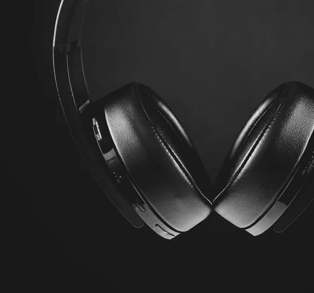
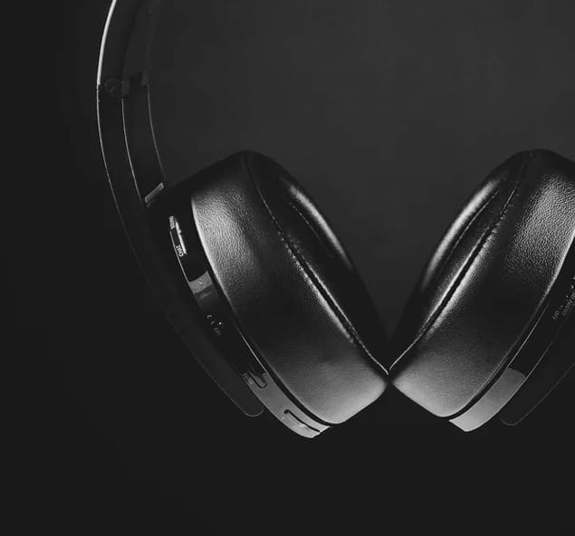

New Product
xx99 mark || headphones
The new XX99 Mark || headphones is pinnacie pristine audio. It redefines your premium headphone experience by reproducing the balanced depth and precision of studio-quality sound.
$2,999 $3,250
Features
Featuring a genuine leather head strap and premium earcups, these headphones deliver superior comfort for those who like to enjoy endless listening. It includes intutive controls designed for any situation. Whether you're taking a business call or just in your own personal space, the auto on/off an pause features ensure that you'll never miss a beat.
The advanced Active Noice Cancellation with built-in equalizer allow you to experience your audio world on your terms. It lets you enjoy your audion in peace but quickly interact with your surroundings when you need to Combined with Blutooth 5.0 complaint connectivity and 17 hours battery life, the XX99 Mark || headphones gives you superior sound, cutting-edge technology, and a modern design aesthetic.
In the box
Headphone Unit
Replacement Earcups
User Manual
3.5mm 5m Audio Cable
Travel Bag
 
